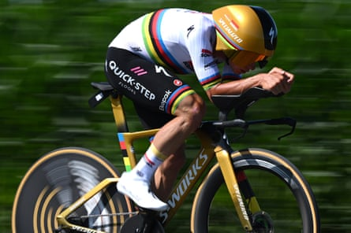
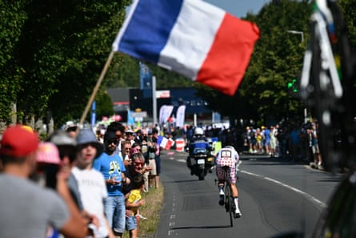

Tadej Pogacar struck the first blow in his rivalry with Jonas Vingegaard by taking the overall Tour de France lead after finishing second to Remco Evenepoel in the stage five time trial in Caen.
Pogacar’s performance exceeded expectations and will have hit hard on Vingegaard’s Visma‑Lease a Bike team bus, with the double Tour winner now more than a minute behind his Slovenian rival after only five days of racing.
“I was surprised,” Pogacar said of the gap he opened up on the Dane. “I’m not going to lie. I was not expecting to be so far ahead of him in this time trial. I expected him to be closer to Remco, but maybe he didn’t have a great day.”
While the Olympic and world time trial champion Evenepoel, riding at an average speed of 54km/h, claimed an expected stage success, Pogacar was the real winner, as Vingegaard’s challenge wilted in the heat of the Calvados afternoon.
With Vingegaard now under pressure to combat his rival, there may be further tension in the camp, with his American teammate Matteo Jorgenson, winner of the Paris-Nice race in March, just nine seconds behind him.
“I don’t have an explanation,” Visma’s head of racing, Grischa Niermann, said of his team leader’s result. “Of course, we hoped for more. I guess Jonas didn’t have enough power today.”
Pogacar, however, was not getting carried away. “I always have eyes on everybody, not just one guy,” he said. “You cannot discount all the riders up to top 10 in general classification.
Remco Evenepoel powers his way towards a time trial victory.Photograph: Dario Belingheri/Getty Images
“Jonas is the most hungry to get back time, he’s in super good shape, his team’s in good form, so they will try, maybe tomorrow or the next day.”
Yet there is no doubt the pendulum has now swung in Pogacar’s favour. Evenepoel, winner of the 2024 Tour time trial stage to Gevrey‑Chambertin, had predicted he would make up almost a minute on Pogacar and, quickly into his compact position, set off at breakneck pace. Despite winning the stage, the Belgian did not achieve the time gains for which he had hoped.
The Slovenian, blindsided by a flying Evenepoel in the Critérium du Dauphiné time trial a month ago, was this time a different prospect. His performance around Caen was much more competitive than expected and kept the Belgian in check, while transforming a slim overnight advantage over Vingegaard of 8sec into a significant 1min 13sec.
But on a stage thankfully free of any of the pile-ups that have marked some of the earlier stages, the safety debate still shadowed the peloton, after the Canadian rider Mike Woods, 122nd overall in the Tour, said that race organisers ASO “love crashes”.
Writing on his blog, the 38 year old Woods, a stage winner in the 2023 Tour, said: “Despite their claimed attempts to make the sport safer, one gets a sense – when watching any highlight reel they create – that blood, broken bikes, and some poor bastard walking into an ambulance are what they love to sell.”
All eyes on Tadej Pogacar on stage five.Photograph: Loïc Venance/AFP/Getty Images
Another casualty of earlier crashes, Emilien Jeannniere of France, who was catapulted into the crowd barriers in the stage to Dunkirk on Monday, quit the race after it was discovered that he had broken his shoulder, even though he successfully finished stage four into Rouen.
“It’s sad to abandon my first Tour, but there are other races and I have to put my health first,” the 26 year old rider said.
Others are faring better, with the rising British talents Oscar Onley and the Tour debutant Joe Blackmore quickly finding their feet in this year’s race. In contrast, prospects looked gloomier for Ineos Grenadiers with Carlos Rodriguez now languishing in 16th place, four minutes behind Pogacar, after the first time trial.
The sixth stage on Thursday, from Bayeux to Vire, includes six categorised climbs and may see more sparring at the uphill finish, on the 14% slopes of the Avenue d’Atlacomulco.